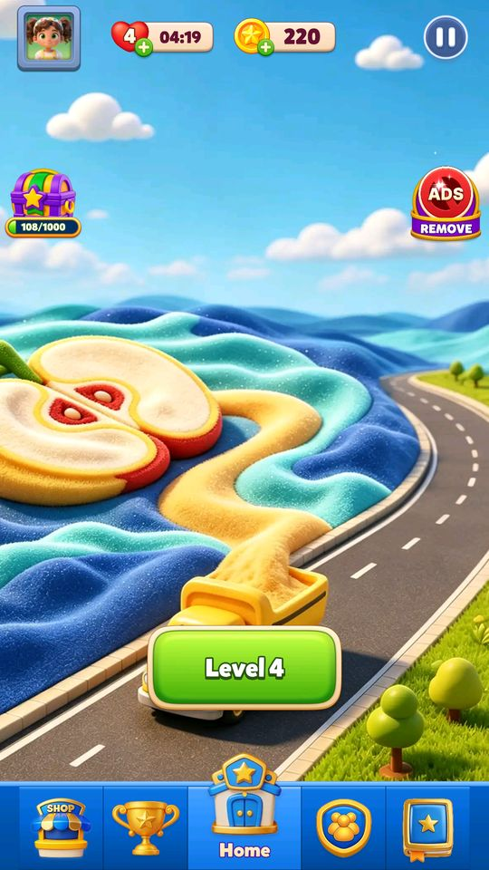

HUD & trạng thái trong level
HUD của ván chơi do khung m8 dựng: thanh trên có nhãn «Level N» (nền theo độ khó), ô coin và nút bỏ QC; thanh dưới có nút pause và tối đa 4 nút booster (GamePropSystem).
Mô tả
- HUD của ván chơi do khung m8 dựng: thanh trên có nhãn «Level N» (nền theo độ khó), ô coin và nút bỏ QC; thanh dưới có nút pause và tối đa 4 nút booster (GamePropSystem).
- Cùng hệ thống quản lý nút Play to trên Home (số level, nhãn khó/siêu khó, nhãn hệ số, nhãn chuỗi thắng «winning») và lưu level hiện tại.
- Template gốc có đồng hồ đếm ngược, hiệu ứng đóng băng thời gian và hoạt ảnh +giờ, nhưng trong Jam Bus không có nơi nào của lõi Bus cấp giờ cho khung (m8GameNotify::onTimeChange không có caller ngoài; m8GameBoardTemplate::addTime chỉ trả lại tham số) nên đồng hồ không chạy — level Bus không giới hạn thời gian (suy luận).
Thiết kế chi tiết
Tóm tắt thiết kế
CodeAPK Trong ván: thanh trên có nhãn «Level N» (nền thường/khó/siêu khó) và ô coin; thanh dưới có nút pause và tối đa 4 nút booster. Nút bỏ QC chỉ hiện khi tham số bắt đầu không chứa phần tử < 4 (ý nghĩa: suy luận).
Code Cùng hệ thống lo nút Play to trên Home: số level, nhãn độ khó, nhãn hệ số, nhãn chuỗi thắng «winning», hoạt ảnh vật phẩm bay vào nút.
Code Template có đồng hồ đếm ngược, đóng băng và +giờ, nhưng lõi Bus không gọi m8GameNotify::onTimeChange và m8GameBoardTemplate::addTime chỉ trả tham số → không có đồng hồ (suy luận).
CodeLive 13/11 Level lưu ở 2024_12_20_10_15_StatusModuleData (live: level 1). Nếu level ≤ số level hướng dẫn thì bị đặt lại 1 khi tải (handleInvalidLevelId).
Code HUD không có thanh tiến độ: tranh cát vơi dần chính là thanh tiến độ, còn nhãn sức chứa đường vòng là chỉ số áp lực.
Luồng người chơi từng bước
- Nút Play trên HomeGiao diệnCodeAPK«Level 1», trạng thái 普通/困难/超困难 (+_倍数), nhãn «winning» + số chuỗi; bấm → chuỗi trước level.

Nút Play «Level 4» trên Home (chưa có nhãn chuỗi thắng) (playtest 15/11, level 4) - HUD đầu vánGiao diệnCode
createOrRefreshCoinBar,createOrRefreshLevelLabel, nút pause, nút booster, nút bỏ QC (có điều kiện). - Nút bỏ QCNgười chơiCodeAPKIcon «按钮_免广告» trên HUD →
showRemoveADWindowmở popup mua bỏ QC (NoAds). - Vật phẩm bay vào nút PlayGiao diệnCodeVề Home có thưởng →
StatusSystem::playCollectAni(«关卡按钮奖励物收集动画») theo độ khó. - Cập nhật trong vánClientCodeCoin đổi (hồi sinh, mua chỗ, booster) →
onUpdateCoinUI→ ô coin làm mới. - Kết thúc vánClientCodeThắng: level +1, customInt 18 = số lần thắng ngay lần đầu; thua: cờ thua level; rời: gỡ nhãn, coin, đồng hồ.

Trạng thái level lưu local (live 13/11)
| Trường | Ý nghĩa | Giá trị |
|---|---|---|
| levelID | Level hiện tại | 1 |
| firstPlaySucceedCount | Số level thắng ngay lần đầu | 0 |
| isThisLevelFail | Đã thua level này chưa | false |
Live 13/11 goods_merge_data_center_in_game_20241206.status_data; Code Imp_data_status.
Thành phần HUD của template và trạng thái ở Bus
| Thành phần | Hàm | Ở Bus |
|---|---|---|
| Nhãn level | createOrRefreshLevelLabel | Có |
| Ô coin | createOrRefreshCoinBar | Có |
| Nút bỏ QC | initNoAdButton | Có điều kiện |
| Đồng hồ / hết giờ | createOrUpdateTimerLabel | Không chạy (suy luận) |
| Đóng băng / +giờ | freezeBegin / flyAddTimeAni | Không chạy (suy luận) |
| Nút booster | GamePropSystem | Có (xem Boosters) |
Code
Vận dụng cho game khác
- Một hệ thống «Status» sở hữu cả nút Play ở Home lẫn HUD trong ván giúp nhãn level/độ khó/chuỗi thắng luôn nhất quán ở hai nơi.
- Đưa nhãn chuỗi thắng lên nút Play khi đã bỏ popup trước level — người chơi vẫn thấy mình đang có chuỗi.
- Nhận định Rủi ro: HUD template có sẵn đồng hồ; nếu tái dùng cho game không giới hạn giờ phải chắc chắn tắt cả layout lẫn analytics liên quan.
Ảnh cần chụp (2) — 1 ảnh đã gắn
Chụp vào screens/deep_1113/LevelHUD/ rồi ghi tên file vào flow[].shots.
- Nút Play trên Home: Nút Play trên Home (có nhãn chuỗi thắng nếu có)
- HUD đầu ván: Thanh trên trong ván: nhãn level + ô coin + nút bỏ QC
Bảng tổng hợp mọi tính năng đã làm chi tiết: JamBus_ThietKeChiTiet.xlsx.
Mở khóa & điểm vào
Có từ level 1.
Điểm vào:
- Màn chơi (tự tạo ở m8GameStatusAdapter::onStart)
- Nút Play trên Home (StatusSystem::showButtonView)
Cách hoạt động
- Home: m8GameSystem::showButton → m8GameStatusAdapter::showButtonView → StatusSystem::showButtonView dựng nút «OSG_游戏状态模块_按钮_主游戏入口» với P-关卡数, P-关卡难度, P-是否有双倍, P-是否有连胜 (nhãn «winning» + số chuỗi); updateButtonViewByLevelID / updateMainButton cập nhật khi đổi level hoặc hệ số; playCollectAni chạy hoạt ảnh nhận thưởng trên nút; bấm nút → onClickEntry → m8GameNotify::onBeforeStartTasksOuter.
- Vào ván: m8GameStatusAdapter::onStart đặt cờ đang chơi, StatusSystem::createOrRefreshCoinBar (P-持有金币数), createOrRefreshLevelLabel (P-关卡数, P-难度等级; nền 普通/困难/超级困难), onGameStart (nhạc «游戏开始»); duyệt danh sách tham số bắt đầu, nếu có phần tử < 4 thì không tạo nút bỏ QC, ngược lại initNoAdButton («按钮_免广告»).
- Thắng: onSucceed tắt cờ, StatusSystem::onGameSucceed, gửi firstPlaySucceedCount (customInt 18); onDidSucceed đặt level mới.
- Thua/bỏ: onFail/onUserBreak → onGameFail.
- Rời: onQuit gỡ nhãn level, ô coin, đồng hồ.
- Level hiện tại, cờ thua level này và số lần thắng ngay lần đầu được Imp_data_status lưu.
Use case (12)
Bấm vào từng use case để mở. Mở/đóng tất cả
UC-01 Nút Play trên Home
Các bước- m8GameSystem::showButton → m8GameStatusAdapter::showButtonView → StatusSystem::showButtonView
- Biến P-关卡难度, P-关卡数, P-是否有双倍, P-是否有连胜; «关卡按钮状态更新»
- StatusSystem::updateButtonViewByLevelID / updateMainButton khi level hoặc hệ số đổi (m8GameSystem::refreshStartButton)
| Actor | System |
|---|---|
| Trigger | Home hiển thị |
| Điều kiện | — |
| Kết quả | Nút «Level N» với nhãn độ khó, hệ số, chuỗi thắng |
| Quy tắc / số liệu | Hard type luôn 1 trong Bus (xem LevelFlow UC-15) → nhãn thường (suy luận) |
| Evidence | m8::m8GameSystem::showButton; m8::m8GameStatusAdapter::showButtonView; StatusSystem::showButtonView; StatusSystem::updateButtonViewByLevelID; StatusSystem::updateMainButton; m8::m8GameSystem::refreshStartButton |
UC-02 Bấm Play
Các bước- m8GameStatusAdapter::onClickEntry → m8GameNotify::onBeforeStartTasksOuter
| Actor | Player |
|---|---|
| Trigger | Bấm nút Play |
| Điều kiện | — |
| Kết quả | Chuỗi trước level (PreLevel) |
| Evidence | m8::m8GameStatusAdapter::onClickEntry; m8::m8GameNotify::onBeforeStartTasksOuter |
UC-03 Hoạt ảnh nhận thưởng trên nút Play
Các bước- m8GameSystem::playCollectAni → m8GameStatusAdapter::playCollectAni → StatusSystem::playCollectAni («关卡按钮奖励物收集动画», theo độ khó)
| Actor | System |
|---|---|
| Trigger | Về Home có vật phẩm |
| Điều kiện | — |
| Kết quả | Vật phẩm bay vào nút |
| Evidence | m8::m8GameSystem::playCollectAni; m8::m8GameStatusAdapter::playCollectAni; StatusSystem::playCollectAni |
UC-04 Dựng HUD đầu ván
Các bước- m8GameStatusAdapter::onStart: cờ isGamming = 1
- StatusSystem::createOrRefreshCoinBar («OSG_游戏状态模块_金币栏», P-持有金币数)
- StatusSystem::createOrRefreshLevelLabel («RED玩法_游戏状态模块_等级标签栏»: «Level 1090», nền 普通/困难/超级困难)
- StatusSystem::onGameStart (sự kiện nhạc «游戏开始»)
| Actor | System |
|---|---|
| Trigger | m8GameControl::onStart |
| Điều kiện | — |
| Kết quả | Thanh trên có level + coin |
| Evidence | m8::m8GameStatusAdapter::onStart; StatusSystem::createOrRefreshCoinBar; StatusSystem::createOrRefreshLevelLabel; StatusSystem::onGameStart |
UC-05 Nút bỏ quảng cáo trong ván
Các bước- Duyệt vector trong tham số bắt đầu; gặp phần tử < 4 → cờ +0x1a8 = 1, bỏ qua
- Không có → StatusSystem::initNoAdButton (P-是否有免广告按钮, «游戏内免广告按钮初始化»)
- Bấm nút → m8GameStatusAdapter::showRemoveADWindow
| Actor | System |
|---|---|
| Trigger | m8GameStatusAdapter::onStart |
| Điều kiện | — |
| Kết quả | Icon «按钮_免广告» mở popup mua bỏ QC (NoAds) |
| Quy tắc / số liệu | Ý nghĩa vector (loại tài sản theo thời gian?) là suy luận |
| Evidence | m8::m8GameStatusAdapter::onStart; StatusSystem::initNoAdButton; m8::m8GameStatusAdapter::showRemoveADWindow; StatusSystem::destoryNoAdButton |
UC-06 Cập nhật coin trong ván
Các bước- m8GameSystem::updateCoinUI → m8GameNotify::onUpdateCoinUI → m8GameStatusAdapter::updateCoinUI → StatusSystem::createOrRefreshCoinBar
| Actor | System |
|---|---|
| Trigger | Coin đổi (mua hồi sinh, booster…) |
| Điều kiện | — |
| Kết quả | Ô coin hiển thị số mới |
| Evidence | m8::m8GameSystem::updateCoinUI; m8::m8GameNotify::onUpdateCoinUI; m8::m8GameStatusAdapter::updateCoinUI |
UC-07 Đồng hồ, đóng băng, +giờ (template, không chạy trong Bus)
Các bước- m8GameNotify::onTimeChange → m8GameStatusAdapter::refreshTimerLabel → StatusSystem::createOrUpdateTimerLabel (%d:%d, «时间不足全屏反馈进入»)
- m8GameStatusAdapter::beginFreeze/endFreeze → StatusSystem::freezeBegin/freezeEnd
- m8GameStatusAdapter::flyAddTimeAni → StatusSystem::flyAddTimeAni (sandglass «沙漏»)
| Actor | System |
|---|---|
| Trigger | m8GameNotify::onTimeChange / m8GameProtocol::flyAddTimeAni |
| Điều kiện | Lõi game có giới hạn giờ |
| Kết quả | Không xảy ra ở Bus: không caller nào ngoài khung gọi onTimeChange; m8GameBoardTemplate::addTime chỉ trả tham số |
| Quy tắc / số liệu | Suy luận: level Bus không giới hạn thời gian |
| Evidence | m8::m8GameNotify::onTimeChange; m8::m8GameStatusAdapter::refreshTimerLabel; StatusSystem::createOrUpdateTimerLabel; StatusSystem::freezeBegin; m8::m8GameBoardTemplate::addTime |
UC-08 Kết thúc ván: cập nhật trạng thái
Các bước- Thắng: m8GameStatusAdapter::onSucceed → StatusSystem::onGameSucceed; GTUser customInt 18 = getFirstPlaySucceedCount
- m8GameStatusAdapter::onDidSucceed → StatusSystem::setLevelID (level mới)
- Thua/bỏ: m8GameStatusAdapter::onFail / onUserBreak → StatusSystem::onGameFail (cờ thua level)
- Rời: m8GameStatusAdapter::onQuit → onGameQuit, destoryLevelLabel, destoryCoinBar, destoryTimerLabel
| Actor | System |
|---|---|
| Trigger | Thắng / thua / bỏ |
| Điều kiện | — |
| Kết quả | Level tăng khi thắng; cờ thua ghi khi thua |
| Evidence | m8::m8GameStatusAdapter::onSucceed; m8::m8GameStatusAdapter::onDidSucceed; StatusSystem::setLevelID; m8::m8GameStatusAdapter::onFail; m8::m8GameStatusAdapter::onQuit |
UC-09 Lưu level hiện tại
Các bước- Imp_data_status::setLevelID, setThisLevelFail, triggerFirstPlaySucceed ghi «2024_12_20_10_15_StatusModuleData»
- Imp_data_status::handleInvalidLevelId: nếu levelID ≤ RedABTest::getTutorialLevelNum thì đặt lại levelID = 1 và lưu (người chơi bỏ giữa các level hướng dẫn quay về level 1)
- m8GameSystem::setLevelID (debug) → m8GameNotify::onChangeLevelIDForDebug
| Actor | System |
|---|---|
| Trigger | Đổi level / thua / thắng lần đầu |
| Điều kiện | — |
| Kết quả | Level giữ qua phiên |
| Quy tắc / số liệu | Live 13/11: levelID 1, firstPlaySucceedCount 0, isThisLevelFail false |
| Evidence | Imp_data_status::setLevelID; Imp_data_status::setThisLevelFail; Imp_data_status::triggerFirstPlaySucceed; Imp_data_status::handleInvalidLevelId; m8::m8GameSystem::setLevelID |
UC-10 Nhạc nền theo trạng thái
Các bước- StatusSystem::CreateBGM («OSG_游戏状态模块_接口_背景音乐»)
- StatusSystem::onMusicEventChange (P-事件名, «背景音乐状态控制»)
- m8GameStatusAdapter::onMusicSwitch → StatusSystem::onMusicSwitch
| Actor | System |
|---|---|
| Trigger | Bắt đầu / thoát ván, bật tắt nhạc |
| Điều kiện | — |
| Kết quả | Nhạc nền đổi theo pha |
| Evidence | StatusSystem::CreateBGM; StatusSystem::onMusicEventChange; m8::m8GameStatusAdapter::onMusicSwitch |
UC-11 Bố cục điểm neo HUD
Các bước- Đọc các node: 弹窗层, 暂停按钮, 全屏游戏区域, 游戏区域, 道具蒙版, 游戏动画层, 飞行动画层, 盒子道具, 游戏区域上边沿, 顶部栏下边沿, 底部栏上边沿, 时间栏, 金币栏, 等级栏, 金片目标栏, 卡包栏, 星星栏, 连消进度栏…
- m8GameStatusAdapter::setPosNodes truyền cho StatusSystem::setNodes
| Actor | System |
|---|---|
| Trigger | m8GameControl::setPosNodes |
| Điều kiện | — |
| Kết quả | Mọi widget gắn đúng chỗ trên «OSG_主游戏模块_界面_游戏界面» |
| Quy tắc / số liệu | Layout có 4 điểm neo booster (道具按钮定位点1–4) |
| Evidence | m8::m8GameControl::setPosNodes; m8::m8GameStatusAdapter::setPosNodes; StatusSystem::setNodes |
UC-12 Chỉ báo tiến độ trong ván
Các bước- Không có thanh % trên HUD: tiến độ nhìn bằng chính tranh cát vơi dần
- Nhãn sức chứa đường vòng (BQRingTrackView::updateCapacityDisplay) là con số áp lực duy nhất
- % cát chỉ dùng cho analytics/hồi sinh
| Actor | System |
|---|---|
| Trigger | Mỗi frame |
| Điều kiện | Level đang chạy |
| Kết quả | HUD tối giản; thông tin chiến thuật nằm ở đáy tranh và số chỗ trống |
| Quy tắc / số liệu | — |
| Evidence | BusQueue::BQRingTrackView::updateCapacityDisplay; SandUpperController::getSandCollectedPercent |
Cấu hình (12)
Gộp mọi nguồn: const trong pseudo-C của libMyGame.so, JSON/CSV giải mã trong APK (assets_dec/), storage key (MMKV / UserDefault), nhóm A/B, giá trị server / Firebase RC trong snapshot thiết bị 13/11/2026.
| Nguồn | Key | Kiểu | Giá trị | Ý nghĩa | Nơi định nghĩa |
|---|---|---|---|---|---|
| storage key | 2024_12_20_10_15_StatusModuleData | json | {levelID, firstPlaySucceedCount, isThisLevelFail} | Trạng thái level | Imp_data_status |
| storage key | goods_merge_data_center_in_game_20241206.status_data | json | levelID 1, firstPlaySucceedCount 0, isThisLevelFail false (live 13/11) | Bản gộp | MMKV sync |
| AB test | RedABTest::getTutorialLevelNum | int | 1 (nhóm 90); 4 ở một số nhóm | levelID ≤ ngưỡng → đặt lại 1 | Imp_data_status::handleInvalidLevelId |
| code const | no-ad button rule | rule | ẩn nếu tham số bắt đầu chứa phần tử < 4 | Điều kiện nút bỏ QC | m8GameStatusAdapter::onStart |
| code const | GTUser customInt 18 | int | firstPlaySucceedCount | Thống kê thắng lần đầu | m8GameStatusAdapter::onSucceed |
| asset | OSG_游戏状态模块_按钮_主游戏入口.redream | layout | «Level 1», «Super Hard», 常态_普通/困难/超困难关卡 (+_倍数), 连胜标签, 倍数标签 | Nút Play | assets_dec |
| asset | OSG_游戏状态模块_主游戏入口_连胜标签.redream | layout | «winning», 文本_连胜数 | Nhãn chuỗi thắng | assets_dec |
| asset | RED玩法_游戏状态模块_等级标签栏.redream | layout | «Level 1090», 普通/困难/超级困难关卡背景 | Nhãn level trong ván | assets_dec |
| asset | OSG_游戏状态模块_时间栏.redream | layout | 普通/困难/超困难倒计时, 冰冻效果开始/结束, 时间增加反馈 | Đồng hồ template (không dùng ở Bus) | assets_dec |
| asset | OSG_主游戏模块_界面_游戏界面.redream | layout | 顶部UI栏, 底部UI栏, 暂停按钮, 道具按钮定位点1–4 | Bố cục màn chơi | assets_dec |
| asset | OSG_游戏状态模块_多语言文件.lan (en) | plist | key1 «Level #!1»; key2 «Winning»; key3 «Hard»; key4 «Super Hard» | Văn bản nút Play / nhãn level | assets_dec |
| asset | OSG_道具模块_多语言文件.lan (en) | plist | key3 «You are stuck, please use a prop»; key7 «Pick a bus to fill right away»; key8 «Any Vehicle Enters the VIP Parking Space»; key9 «Rearrange the color of the vehicle»; key10 «Refresh all items»; key1 «Unlocked at Level#!1»; key5 «Get More»; key11 «Play on» | Văn bản nút booster trong ván (mô tả đã đổi sang Bus) | assets_dec |
Giao diện (UI)
| Element | Class | Mục đích |
|---|---|---|
| Nút Play Home | StatusSystem | Level, độ khó, hệ số, chuỗi thắng |
| Nhãn level + ô coin | StatusSystem | Thanh trên trong ván |
| Nút bỏ QC | StatusSystem | Mở popup NoAds |
| Nút booster trong ván | GamePropSystem | Xem Boosters |
| GameMainUI | GameMainUI | HUD khung BQ độc lập (lbl_level, btn_pause, 3 booster 指定消除/小人刷新/重新排序), không dùng ở bản phát hành |
Analytics (1)
| Event | Tham số | Khi nào |
|---|---|---|
GTUser customInt 18 | firstPlaySucceedCount | Thắng |
Storage keys
2024_12_20_10_15_StatusModuleData goods_merge_data_center_in_game_20241206 (status_data)
Chưa đọc được / ghi chú
- Vector trong tham số bắt đầu dùng để ẩn nút bỏ QC chưa xác định (loại tài sản / sự kiện?).
- createRecoverWindow («M8G_游戏状态模块_弹窗_存档继续») có trong code nhưng board không khôi phục được ván.
- Nhãn hệ số (P-是否有双倍) lấy qua getIsDouble (thân gọi delegate) — nguồn hệ số thuộc sự kiện.
Tính năng liên quan
Luồng level (vào→kết thúc) Màn trước level & booster đầu Tạm dừng trong level Vật phẩm hỗ trợ (booster) Gói bỏ quảng cáo Chuỗi thắng Coin
Nguồn đã đọc
- pseudoc/StatusSystem.c
- pseudoc/m8__m8GameStatusAdapter.c
- pseudoc/Imp_data_status.c
- pseudoc/m8__m8GameControl.c
- pseudoc/m8__m8GameNotify.c
- assets_dec/OSG_游戏状态模块_*.redream
- facts/runtime/live_1113 (MMKV)
- assets_dec/OSG_游戏状态模块_多语言文件.lan